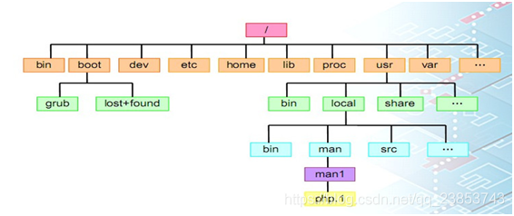

Linux常用命令总结
Linux的目录结构

常用命令与示例
Linux命令及其参数是严格区分大小
Linux文件名严格区分大小写
一.文件基本操作命令
ls
查看清单
ls显示指定目录中的文件清单(不指定则默认为当前目录)
显示隐含文件
ls -a说明：若文件名以“.”开头，则认为是隐含的，进而普通的ls命令不显示以“.”开头的文件；所以要完全显示某目录下的文件清单，必须加上-a参数才行。
长格式输出
长格式输出内容如下: **文件权限 连接数 属主 属组 大小 日期 时间 文件名**ls -l(及ll)Linux文件有三种典型的权限，即r读权限、w写权限和x执行权限。在长格式输出中在文件类型的后面有9列权限位，实际上这是针对不同用户而设定的:777
属主的权限 属组的权限 其他用户的权限
rwx rwx rwx递归显示
ls -R递归显示指定目录下的文件清单，即会显示指定目录分支内各子目录中的文件清单。
pwd
显示当前目录路径
mkdir
创建目录
mkdir dirname在当前目录下创建目录名为dirname的目录
创建多级目录
mkdir -p a/b/c参数-p功能是如果要创建的目录的父目录不存在，则先创建其父目录，再创建该目录； 如果指定的目录存在，则不影响原目录，也不会报错。在本示例中会连续创建a目录、a/b目录、a/b/c目录。
cd
切换工作目录
不带参数的cd命令直接将当前的工作目录切换为该用户的主目录（即~）。主目录又称为家目录，在/home下为用户创建一个用其用户名同名的目录，并将该目录的所有权划归给该用户所有。
touch
touch file
- 如果file不存在，则创建一个大小为0字节名为file的空文件。
- 如果file已存在，则将改变file的最后修改时间。
cp
复制文件
cp dir1/* dir2将dir1目录下的所有文件复制到目录dir2中。
复制目录
cp -R dir1 dir2增加了参数-R，就能将目录dir1下面的所有子目录和文件都复制到目录dir2中。
mv
移动
mv fd dir如果dir存在且是个目录，则将文件(或目录)fd移动到目录dir中。
改名
mv fd fd1将文件（或目录）fd改名为fd1。
rmdir
删除指定的空目录
rm
删除指定的文件file
rm file删除目录
rm -rf dir参数-r是递归的意思，即可以删除非空目录；参数-f是强制的意思。
cat
显示文件内容
cat file显示指定文件file内容
创建简短文本文件
cat > file 输入的内容，例如：hello,world 按ctrl+d结束输入利用输出重定向符“>”来创建简短的文本文件myfile2。
more和less
more显示
more file分屏显示指定文件httpd.conf的内容，非常适合显示超过一屏的文本文件。每按一下空格键，向后翻一屏；每按一次回车键，向后翻一行。
less显示
less fileless与more功能很相似，只不过less功能更强大，支持PageUp键向前翻屏，及PageDown向后翻屏。
head
默认显示头
head file默认显示文件的头10行的内容。
参数显示头
head -n 99 file参数-n设置显示指定行数，如上显示file的头99行内容。
tail
默认显示尾
tail file默认显示文件的尾10行的内容。
参数显示尾
tail -n 99 file参数-n设置显示指定行数，如上显示file的尾99行内容。
二.文件属性操作命令
chown
改属主
chown user1 file将指定文件file的属主（所有者）改为user1。
递归改属主
chown -R user1 dir参数-R，表示递归，即可以深入到指定目录中的每一层，将所有子目录和文件的属主（所有者）改为指定的用户；本例中会将dir目录中所有子目录和文件的属主设定为user1。
chgrp
改属组
chgrp group file将指定文件hello.txt的属组改为group。
递归改属组
chgrp -R group dir参数-R，表示递归，即可以深入到指定目录中的每一层，将所有子目录和文件的属组改为指定的组；本例中会将dir目录中所有子目录和文件的属组设定为group。
chmod
chmod u+x file
为文件file的属主增加执行权限。
chmod g-w,o=x file
将文件file的属组去掉写权限，同时将其他用户设置为只有执行权限，而文件属主的权限不变。
注：u针对属主、g针对属组、o针对其他用户、a针对所有用户；
=表示赋予（设置）指定权限，要注意它会覆盖原权限，+表示在原有权限的基础上增加指定权限，-表示在原有权限的基础上去掉指定权限；
chmod 764 file
将文件file的权限设置为：
属主拥有全部权限；
属组拥有读写权限；
其他用户拥有只读权限。
注：(读权限)r=4,(写权限)w=2,(执行权限)x=1
三.查找命令
whichi
显示命令的绝对路径。
注：该命令只能在命令搜索路径指定的目录中去查找命令或程序。
whereis
查询指定命令所在目录以及帮助文档所在目录。
find
按文件名查找
find / -name "filename"参数-name指明按文件名进行查找，即从/目录开始查找以filename开头的所有文件。
按文件大小查找
find /etc -size 8从/etc下开始查找大小为8块的文件，此处默认512字节为1块。若认为块大小为1k，则应写为8k。
其它可以使用的单位有c（字节）、w（双字节）、M（兆字节）和G（吉字节）。
按文件类型查找
find /var -type d -print从/var目录下开始查找类型为目录的文件，其中参数-print是显示到屏幕上的意思，经常省略。
按文件修改的时间查找
find . -cmin -5从当前目录下查找5分钟之内修改过的文件。
如果把“-5”改为 “+5”，则表示查找5分钟以前修改过的文件。不带“+”或“-”，则认为整5分钟。 如果把时间单位改为天，则使用参数“-ctime”。
按文件的权限查找
find dir -perm 755查找dir目录下的权限恰为755的文件。
如果为+755，查找dir目录下的满足755中任何一种权限的文件，即符合任何一个指定的权限位即可;
如果为-755，查找dir目录下的权限至少满足755的文件，即指定的所有权限位必须符合才算满足查询条件。
四.文件内容操作命令
grep
查找含指定行
grep "lg" file在指定的文件中查找包含特定的字符串的行
在file文件中查找包含字符串”lg”的行。
grep "lg" dir/*.conf查找dir目录下扩展名为conf的文件包含lg的行。
查找不含指定行
grep -v "lg" file查找file文件中不包含字符串“lg”的行。
wc
统计
wc file统计出文件file的行数，单词数，字符数。
参数使用
wc -l file参数-l的功能可统计出指定文件的行数。另外，利用参数-w统计单词，利用-c统计字符数。
sort
按正序输出
sort file将指定文件以行为单位按正序输出。
按逆序输出
sort -r file将指定文件以行为单位按逆序输出。
diff
比较文件
diff file1 file2比较文件file1与file2是否相同，将不同之处输出到屏幕上。
cut
cut命令是一个文本提取工具，它以行为单位，将每行看作一条记录，而字段之间的分隔符可以灵活地定义。
按特定的分隔符提取指定的字段
cut -d: -f1 file参数-d用来定义字段之间的分隔符，参数-f指定提取第几个字段；本例为提取file文件中以“：”为分隔符的第1个字段。
五.压缩与打包命令
tar
打包（备份）
tar -cvf pac.tar dir- 参数-c的功能是打包（创建），
- 参数-v是显示处理过程，
- 参数-f是用来指定文档名；
本例的功能是：将目录dir打包为一个名为pac.tar的文档。
打包（备份）并压缩
tar -zcvf pac.tar.gz dir其中参数-z是调用gzip命令来压缩，扩展名为gz，
参数-Z是调用compress命令来压缩，扩展名为Z，
参数-j是调用bzip2命令来压缩，扩展名为bz2。
将目录dir打包并压缩为一个名为pac.tar.gz的文档。
六.网卡配置命令
显示接口（网卡）配置参数
ifconfig显示网卡参数的配置情况，包括IP地址、子网掩码、广播地址等。
设置接口（网卡）配置参数
ifconfig eth0 10.22.1.103 netmask 255.255.255.0设置网卡eth0的IP地址为10.22.1.103、掩码为255.255.255.0。
注：eth0是系统中第1块以太网卡的名称，eth1是系统中第2块以太网卡的名称，以此类推。lo是环回测试网卡的名称。
禁用某块网卡
ifconfig eth0 down禁用网卡eth0。
注：此时再用不带参数的ifconfig命令是不能显示eth0的信息的，需要加上参数“**-a****”**才可显示被禁用的网卡信息。
激活某块网卡
ifconfig eth0 up激活网卡eth0。
例：配置无线网卡
七.rpm命令
查询系统中安装的软件包
rpm -qa查询系统中安装的软件包列表，其中参数-q的功能是“查询”，参数-a的功能是“所有的”。
查询软件包中文件清单
rpm -ql php查询已安装的软件包php中的文件列表，其中参数-l的功能是“列出指定软件包中的文件”。
卸载指定的软件包
rpm -e php卸载已安装的软件包php，参数-e的功能是“卸载”。
注：请注意执行上述命令时，采用的身份是不同的，普通用户只能执行查询操作。
安装软件包
rpm -ivh php-4.3.9-3.1-i386.rpm安装软件包php，
- 参数-i的功能是“安装”，
- 参数-v的功能是“显示处理过程”，
- 参数-h的功能是显示“#”来表示进度。
强制安装软件包
rpm -ivh --force php-4.3.9-3.1-i386.rpm强制安装软件包php，参数—force表示强制的意思。
注：如果要安装的软件的版本比较低或该软件包在系统中已存在，系统会给出提示并拒绝安装，此时可以加上参数—force来进行强制安装。
忽略关系安装软件包
rpm -ivh --nodeps php-4.3.9-3.1-i386.rpm安装软件包php时忽略与其它软件包的依赖关系，参数\—nodeps**表示忽略依赖关系。
注：在安装或卸载软件时经常会遇到提示“该软件包与某某软件包存在依赖关系”，只有加上参数—nodeps忽略掉依赖关系才能进行安装或卸载。
卸载
rpm -q <关键字> #查询到rpm包的名字 rpm -e <包名> #删除特定rpm包 rpm -e --nodeps <包的名字> #不检查依赖，直接删除rpm包示例
rpm -ivh package.rpm 安装一个rpm包 rpm -ivh --nodeeps package.rpm 安装一个rpm包而忽略依赖关系警告 rpm -U package.rpm 更新一个rpm包但不改变其配置文件 rpm -F package.rpm 更新一个确定已经安装的rpm包 rpm -e package_name.rpm 删除一个rpm包 rpm -qa 显示系统中所有已经安装的rpm包 rpm -qa | grep httpd 显示所有名称中包含 "httpd" 字样的rpm包 rpm -qi package_name 获取一个已安装包的特殊信息 rpm -qg "System Environment/Daemons" 显示一个组件的rpm包 rpm -ql package_name 显示一个已经安装的rpm包提供的文件列表 rpm -qc package_name 显示一个已经安装的rpm包提供的配置文件列表 rpm -q package_name --whatrequires 显示与一个rpm包存在依赖关系的列表 rpm -q package_name --whatprovides 显示一个rpm包所占的体积 rpm -q package_name --scripts 显示在安装/删除期间所执行的脚本l rpm -q package_name --changelog 显示一个rpm包的修改历史 rpm -qf /etc/httpd/conf/httpd.conf 确认所给的文件由哪个rpm包所提供 rpm -qp package.rpm -l 显示由一个尚未安装的rpm包提供的文件列表 rpm --import /media/cdrom/RPM-GPG-KEY 导入公钥数字证书 rpm --checksig package.rpm 确认一个rpm包的完整性 rpm -qa gpg-pubkey 确认已安装的所有rpm包的完整性 rpm -V package_name 检查文件尺寸、 许可、类型、所有者、群组、MD5检查以及最后修改时间 rpm -Va 检查系统中所有已安装的rpm包- 小心使用 rpm -Vp package.rpm 确认一个rpm包还未安装 rpm2cpio package.rpm | cpio --extract --make-directories *bin* 从一个rpm包运行可执行文件 rpm -ivh /usr/src/redhat/RPMS/`arch`/package.rpm 从一个rpm源码安装一个构建好的包 rpmbuild --rebuild package_name.src.rpm 从一个rpm源码构建一个 rpm 包
八.其他安装命令
yum(软件包升级器)
yum install package_name 下载并安装一个rpm包 yum localinstall package_name.rpm 将安装一个rpm包，使用你自己的软件仓库为你解决所有依赖关系 yum update package_name.rpm 更新当前系统中所有安装的rpm包 yum update package_name 更新一个rpm包 yum remove package_name 删除一个rpm包 yum list 列出当前系统中安装的所有包 yum search package_name 在rpm仓库中搜寻软件包 yum clean packages 清理rpm缓存删除下载的包 yum clean headers 删除所有头文件 yum clean all 删除所有缓存的包和头文件apt(软件工具)
apt-get install package_name 安装/更新一个 deb 包 apt-cdrom install package_name 从光盘安装/更新一个 deb 包 apt-get update 升级列表中的软件包 apt-get upgrade 升级所有已安装的软件 apt-get remove package_name 从系统删除一个deb包 apt-get check 确认依赖的软件仓库正确 apt-get clean 从下载的软件包中清理缓存 apt-cache search searched-package 返回包含所要搜索字符串的软件包名称
九.查看进程命令
ps
不带参数
ps查询在当前控制台上运行的进程。
查看所有进程
ps -aux查询系统中所有运行的进程，包括后台进程，其中参数a是所有进程，参数x包括不占用控制台的进程，参数u显示用户。
查看所有进程
ps -ef查询系统中所有运行的进程，包括后台进程，而且可以显示出每个进程的父进程号。
pstree
树状格式显示进程列表
pstree以树状格式显示系统的进程列表。
带进程号的树状格式显示进程列表
pstree -p以树状格式显示系统的进程列表，并标识出每个进程的进程号。
top
top
动态地显示系统中的进程。
kill
杀死指定进程
kill 8080kill命令可以杀掉一个进程，当然普通用户只能杀掉自己的进程。
注：上述命令中8080是进程号；一般在执行kill命令之前，先用ps或pstree来查询一下将要被杀掉的进程的进程号。
强制杀掉指定进程
kill -9 8080强制终止8080号进程的运行，其中参数-9代表强制的意思。
注：实际上kill命令是向该进程发送信号，该进程接到信号后决定是否停止运行，有些守护进程必须要收到参数9才终止运行。
补充（遇到则更新）
查看Linux内存情况
free -m
查看防火墙状态
systemctl status firewalld
service iptables status
暂时关闭防火墙
systemctl stop firewalld
service iptables stop
永久关闭防火墙
systemctl disable firewalld
chkconfig iptables off
重启防火墙
systemctl enable firewalld
service iptables restart
永久关闭后重启
chkconfig iptables on
转载请注明来源，欢迎对文章中的引用来源进行考证，欢迎指出任何有错误或不够清晰的表达。可以在下面评论区评论，也可以邮件至 1589631311@qq.com